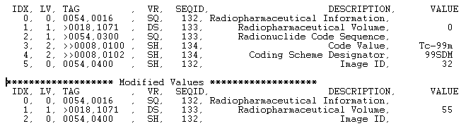

The IDLffDicomEx::SetValue procedure method allows you to add and alter attributes including items contained in sequences. When modifying the value of an existing tag that is contained in a sequence, you must supply a SEQID keyword value. Use the IDLffDicomEx::AddSequence method or the IDLffDicomEx::GetValue method to return the SEQID keyword value.
Note: Use IDLffDicomEx::AddSequence to create the sequence, and then call SetValue, using the returned SEQID from the AddSequence call, to add attributes to the sequence.
This method allows you to:
Note: You must call the IDLffDicomEx::Commit method to write any changes to the DICOM file.
Note: Always use the IDLffDicomEx::SetPixelData method to alter pixel data. Do not use the SetValue method.
Note: To ensure the pixel data is stored in the correct format before being further modified, use the IDLffDicomEx::ChangeTransferSyntax method to modify the compression of the pixel data. Do not use SetValue to directly modify the Transfer Syntax UID attribute (0002,0010).
A tag can have a single value or a tag can have multiple values. Correspondingly, the Value argument consists of either a single value or an array of values. The VR argument determines the Value Representation of the associated value(s). The VR types that can be used in SetPrivateValue are listed in the following table. These are the same VR types described in Value Representations . When SetValue is called to add or modify an attribute value, the conversions listed in the following table are applied to the data values specified in the Value argument. This lets you pass in values of one type and if possible the values will be converted according to the VR argument.
|
Value Representation |
Conversion |
|
AE (Application Entity) AS (Age String) CS (Code String) DA (Date) DS (Decimal String) DT (Date Time) IS (Integer String) LO (Long String) LT (Long Text) PN (Patient Name) SH (Short String) ST (Short Text) TM (Time) UI (Unique Identifier) UT (Unlimited Text) |
STRING |
|
SS (Signed Short) |
FIX |
|
US (Unsigned Short) |
UINT |
|
SL (Signed Long) |
LONG |
|
UL (Unsigned Long) AT (Attribute Tag) |
ULONG |
|
FL (Floating Point Single) |
FLOAT |
|
FD (Floating Point Double) |
DOUBLE |
|
SQ (Sequence) |
No conversion. SQ can only specified for removal. To add a sequence, use the AddSequence method. |
|
OB (Other Byte) |
No conversion. |
|
OW (Other Word) |
No conversion. |
|
OF (Other Float) |
FLT |
Obj ->[ IDLffDicomEx ::]SetValue, DicomTag , VR , Value [, SEQID = integer ] [, / CLEAR ] [, / REMOVE ]
Note: The VR and Value arguments are optional when the CLEAR or REMOVE keywords are set.
A string that identifies the group and element of a DICOM attribute in the form 'XXXX,XXXX' . The DicomTag argument must reference a public tag. See DICOM Attributes for a list of tags.
Note: When adding a DICOM attribute, the tag must be part of the standard IOD for the image type unless the IDLffDicomEx object was initialized with the NON_CONFORMING keyword. Attempting to set an attribute that does not belong to the image type will result in an error. See IDLffDicomEx::Init for details.
A two-character string of the attribute, indicating the Value Representation of the supplied Value argument. When adding an attribute value, the data specified in the Value argument is converted to the data type defined by this argument. See the IDLffDicomEx::SetPrivateValue for how values are converted. See Value Representations for a descriptive VR list.
Note: The VR argument is optional when the REMOVE or CLEAR keyword is set.
An attribute can have a single value or multiple values (only a subset of standard DICOM attributes support multiple values). Set this argument to a single value or array of value(s) to store in the attribute as follows:
See the IDLffDicomEx::SetPrivateValue for the conversions used per VR type.
Note: The Value argument is optional when the CLEAR or REMOVE keyword is set.
Set this keyword only if setting the value of an attribute that exists within a sequence. Use this keyword to specify a sequence identifier as follows:
Set this keyword to remove all values from the attribute.
Note: Some attributes require one or more values in order to be valid. You should always replace any cleared mandatory values if you wish to maintain a valid DICOM file.
Set this keyword to remove the attribute from the DICOM file. If the attribute is a sequence then the sequence and all of the attributes included in the sequence are removed.
Note: Some attributes are required in a valid DICOM file. You should always replace any mandatory attributes that you remove if you wish to maintain a valid DICOM file.
The following code provides examples of:
The NON_CONFORMING keyword is set when the clone is created in order to avoid errors when attempting to add non-standard attributes to the selected DICOM file. The newly added attributes are printed to the IDL Output Log window.
Note: For an example that adds groups of repeating tags to a sequence, see the “Examples” section of IDLffDicomEx::AddGroup .
Note: This example does not write the cloned file to memory. To do so, simply use the IDLffDicomEx::Commit method.
PRO dicom_addpublicattributes_doc
; Select a DICOM file.
sFile = DIALOG_PICKFILE( $
PATH=FILEPATH('',SUBDIRECTORY=['examples','data']), $
TITLE='Select DICOM Patient File', FILTER='*.dcm', $
GET_PATH=path)
; Create a clone (aImgClone.dcm) of the selected file (sfile).
; Set the NON_CONFORMING keyword to be able to add a public SQ
; of radiopharmaceutical items to any file.
oImg = OBJ_NEW('IDLffDicomEx', path + 'aImgClone.dcm', $
CLONE=sfile, /NON_CONFORMING)
; Add a root-level sequence (Radiopharmaceutical Information).
; **********************************************************
vRootSeq = oImg->AddSequence('0054,0016')
; Add an attribute within the sequence.
; *************************************
oImg->SetValue, '0018,1071', 'DS', '0', SEQID=vRootSeq
; Add a nested sequence (Radionuclide Code Sequence).
; ***************************************************
vNestSeq = oImg->AddSequence('0054,0300', PARENTSEQID=vRootSeq)
; Add two items to the nested sequence.
;**************************************
oImg->SetValue, '0008,0100', 'SH', 'Tc-99m', SEQID=vNestSeq
oImg->SetValue, '0008,0102', 'SH', '99SDM', SEQID=vNestSeq
; Print a range including the new tags to
; the Output Log window.
vTags = oImg->EnumerateTags(COUNT=vTagCnt, $
START_TAG='0054,0000', STOP_TAG='0056,0000')
; Format the output.
PRINT, FORMAT= $
'(%"%-12s, %3s, %5s, %31s, %10s")', $
'TAG', 'VR', 'SEQID', $
'DESCRIPTION', 'VALUE'
; Cycle through the tags.
FOR xx = 0, vTagCnt-1 DO BEGIN
; If the item is nested within another item, indicate the
; level using > symbol.
IF (vTags[xx].Level GT 0) THEN BEGIN
vLvl = STRJOIN(REPLICATE('>',vTags[xx].Level))
vtg = vLvl + vTags[xx].Tag
ENDIF ELSE BEGIN
vtg = vTags[xx].Tag
ENDELSE
; If the tags are in a group, indicate this.
IF (vTags[xx].GroupNum GT 0) THEN BEGIN
PRINT, FORMAT='(%"%15s, %1d")', 'Group', vTags[xx].GroupNum
ENDIF
; Print the fields of the structure.
PRINT, FORMAT = $
'(%"%-12s, %3s, %5d, %31s, %10s")', $
vtg, vTags[xx].VR, vTags[xx].SeqId, $
vTags[xx].Description, vTags[xx].Value
ENDFOR
; Clean up references.
OBJ_DESTROY, oImg
END
This code produces the following output.
TAG , VR, SEQID, DESCRIPTION, VALUE
0054,0016 , SQ, 123, Radiopharmaceutical Information,
>0018,1071 , DS, 124, Radiopharmaceutical Volume, 0
>0054,0300 , SQ, 124, Radionuclide Code Sequence,
>>0008,0100 , SH, 125, Code Value, Tc-99m
>>0008,0102 , SH, 125, Coding Scheme Designator, 99SDM
The following example clears the value of a root-level attribute, deletes a nested sequence (and all of its items) and modifies the value of another item within a sequence. The output of the additions and modifications are printed to the Output Log window.
PRO print_tags_doc, vTags, vTagCnt
; Format the output.
PRINT, FORMAT= $
'(%"%3s, %2s, %-12s, %3s, %7s, %3s, %5s, %30s, %10s")', $
'IDX', 'LVL', 'TAG', 'VR', 'LEN', 'CNT', 'SEQID', $
'DESCRIPTION', 'VALUE'
; Cycle through the tags.
FOR xx = 0, vTagCnt-1 DO BEGIN
; If the item is nested within another item, indicate the
; level using > symbol.
IF (vTags[xx].Level GT 0) THEN BEGIN
vLvl = STRJOIN(REPLICATE('>',vTags[xx].Level))
vtg = vLvl + vTags[xx].Tag
ENDIF ELSE BEGIN
vtg = vTags[xx].Tag
ENDELSE
; If the tags are in a group, indicate this.
IF (vTags[xx].GroupNum GT 0) THEN BEGIN
PRINT, FORMAT='(%"%15s, %1d")', 'Group', vTags[xx].GroupNum
ENDIF
; Print the fields of the structure.
PRINT, FORMAT = $
'(%"%3d, %2d, %-12s, %3s, %7d, %3d, %5d, %30s, %10s")', $
xx, vTags[xx].Level, vtg, vTags[xx].VR, vTags[xx].Length, $
vTags[xx].ValueCount, vTags[xx].SeqId, $
vTags[xx].Description, vTags[xx].Value
ENDFOR
END
PRO dicom_clearpublicattributes_doc
; Add and modify public attributes within a DICOM file.
; Select a DICOM file.
sFile = DIALOG_PICKFILE( $
PATH=FILEPATH('',SUBDIRECTORY=['examples','data']), $
TITLE='Select DICOM Patient File', FILTER='*.dcm', $
GET_PATH=path)
; Create a clone (aImgClone.dcm) of the selected file (sfile).
; Set the NON_CONFORMING keyword to be able to add a public SQ
; of radiopharmaceutical items to any file.
oImg = OBJ_NEW('IDLffDicomEx', path + 'aImgClone.dcm', $
CLONE=sfile, /NON_CONFORMING)
; Add a public attribute, Image ID to the root level of the file.
; ***************************************************************
oImg->SetValue, '0054,0400', 'SH', 32
; Add a root-level sequence (Radiopharmaceutical Information).
; **********************************************************
vRootSeq = oImg->AddSequence('0054,0016')
; Add an attribute within the sequence.
oImg->SetValue, '0018,1071', 'DS', '0', SEQID=vRootSeq
; Add a nested sequence (Radionuclide Code Sequence).
vNestSeq = oImg->AddSequence('0054,0300', PARENTSEQID=vRootSeq)
; Add two items to the nested sequence.
oImg->SetValue, '0008,0100', 'SH', 'Tc-99m', SEQID=vNestSeq
oImg->SetValue, '0008,0102', 'SH', '99SDM', SEQID=vNestSeq
; Print a range including the new tags to
; the Output Log window.
vTags = oImg->EnumerateTags(COUNT=vTagCnt, $
START_TAG='0054,0000', STOP_TAG='0056,0000')
print_tags_doc, vTags, vTagCnt
; ************** Clear Values ************************
; Clear the values from an attribute at the root level.
oImg->SetValue, '0054,0400', /CLEAR
; Retrieve the root-level sequence identifier to modify
; items within the sequence.
vSeqId = oImg->GetValue('0054,0016')
; Remove the nested sequence. This also removes all attributes
; contained within the sequence.
oImg->SetValue, '0054,0300', SEQID=vSeqId, /REMOVE
; Change the value of Radiopharmaceutical Volume from 0 to 55.
oImg->SetValue, '0018,1071', 'DS', 55, SEQID=vSeqID
; Print a range including the new tags to
; the Output Log window.
PRINT, '******************* Modified Values *******************
vTags = oImg->EnumerateTags(COUNT=vTagCnt, $
START_TAG='0054,0000', STOP_TAG='0056,0000')
print_tags_doc, vTags, vTagCnt
; Cleanup objects.
OBJ_DESTROY, oImg
END
Running this program produces the following output. the Volume attribute value is changed from 0 to 55, the Radionuclide Code sequence and all member items have been removed, and the Image ID value has been cleared.

|
6.1 |
Introduced |